Play+ Design System
Play+ is the design system under Enterprise Console, APB, Product Studio and the other AAVA studios: one component library that every product themes as its own, in light and dark, without a single product-specific variant.
The whole thing, in six lines
As AAVA grew, each product team designed on its own: different patterns, duplicated components, drifting spacing and type, slower handoff.
Play+ started from a principle, not a component: Design That Breathes. Adaptive, intuitive, inclusive, distinct, engaging.
The core move was semantic tokens. A component never names a colour, only a role, and each product maps the role to its own palette.
So one button serves four products in two modes: pink by default, Pulse blue in Console, violet in Product Studio, rose in Experience Studio.
Everything else is tokens too: spacing, radius, elevation, layout, icon sizes, and the glass surfaces Play+ is known for.
Governance keeps it one system: a new component is checked against what exists first, and only the lead designer can approve it.
Why one system
Every product team was right about its own screens. Together they made products that did not match.
AAVA grew into a family of products: Enterprise Console, where agents are built, and the studios for product and experience work alongside it. Each team designed for itself, and each did reasonable work.
Together it did not hold. The same pattern looked different from product to product. The same component was designed twice. Spacing, type and interaction details drifted. Handoff to development took longer than it should have, accessibility depended on which team you asked, and a new designer or developer had to learn every product separately.
I was part of the core team that built Play+ from January 2025: the system’s architecture, its components and tokens, motion and interaction, the documentation and usage guidelines, and the working relationship with the developers who build it.
A principle before a component
We named what the system should feel like before deciding what it should contain.
The vision was a single design language that lets every product team design, build and ship consistently, without giving up flexibility. The work ran in four steps, in this order:
- Define the philosophy. Design That Breathes: interfaces that feel adaptive, intuitive, inclusive, distinct and engaging.
- Set the pillars. Those five words became the test for every design and development decision.
- Turn pillars into styles. Each pillar expressed visually and in motion: glass, liquid, the Play+ look and feel.
- Build and systemise. In sprints with the AAVA studio teams, into tokens, components and patterns.
The foundations that came out of it are colour, typography, spacing, radius, elevation, grid, motion, icons and theming. Each one exists as tokens, not as values typed into a design file.
Decision: components ask for roles, not colours
A button in Play+ does not know it is pink.
The palette is twelve primary colours, each a full scale from 50 to 900, plus neutrals, black, white, and the feedback colours for success, warning, error and information. Every product or studio is assigned one of the twelve as its brand colour.
The decision that made the system work was a layer between those palettes and the components. Components reference semantic tokens, roles like Brand/Primary/500, and never a palette directly. Each product maps the roles to its own palette: pink by default, Pulse blue for Console, violet for Product Studio, rose for Experience Studio.
That is why no component has a product-specific variant. There is one button. It asks for Brand/Primary, and the product decides what Brand/Primary is.
What it cost
An extra layer to learn. A designer new to the system has to understand that the colour on screen is not the colour the component asks for, and a token named for a role is harder to reason about than a hex value. The payoff is that a new product is a mapping, not a fork.
Brand/Primary/500 Pink 500, light scale #E91E63
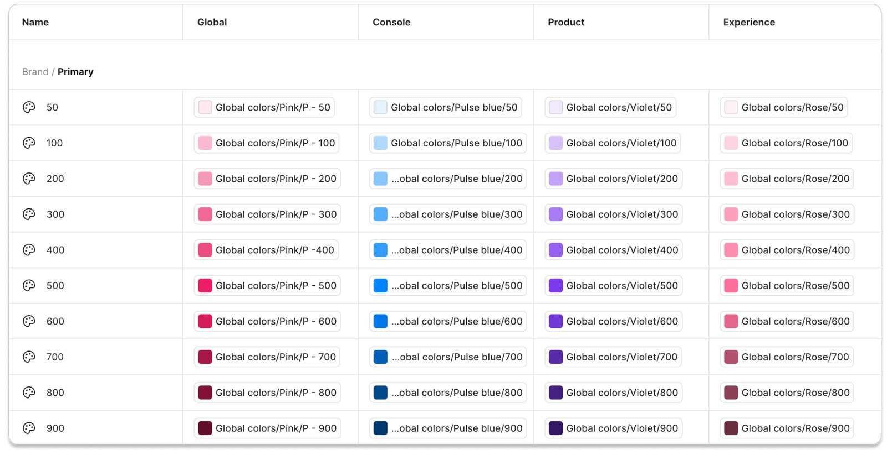
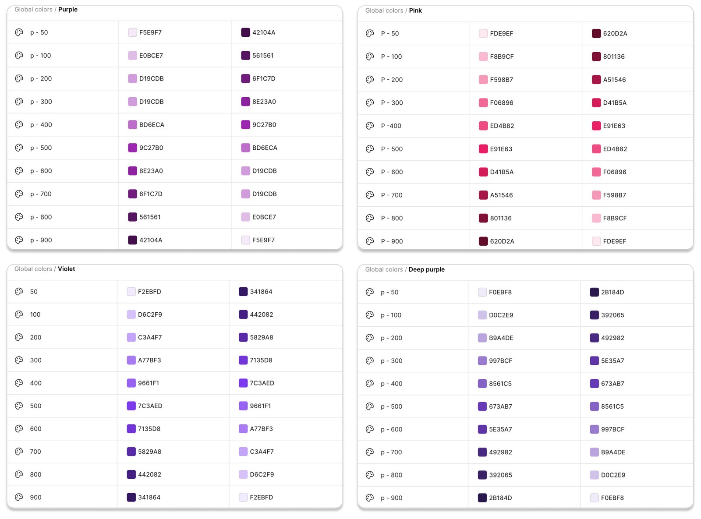
Decision: dark mode is a mapping, not a second library
Light and dark share every component. Only the mapping underneath changes.
Each palette runs as a synchronised pair of scales. The dark scale is the light one in reverse: Pink 50 in light mode is the value Pink 900 takes in dark, and every step between follows. Because components already point at semantic tokens, switching mode swaps the mapping under them and nothing else.
The test was a real screen. Console’s agent creation page, one of the densest in the platform, runs in both modes from the same components, with no dark variant of anything.
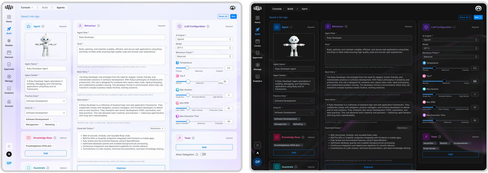
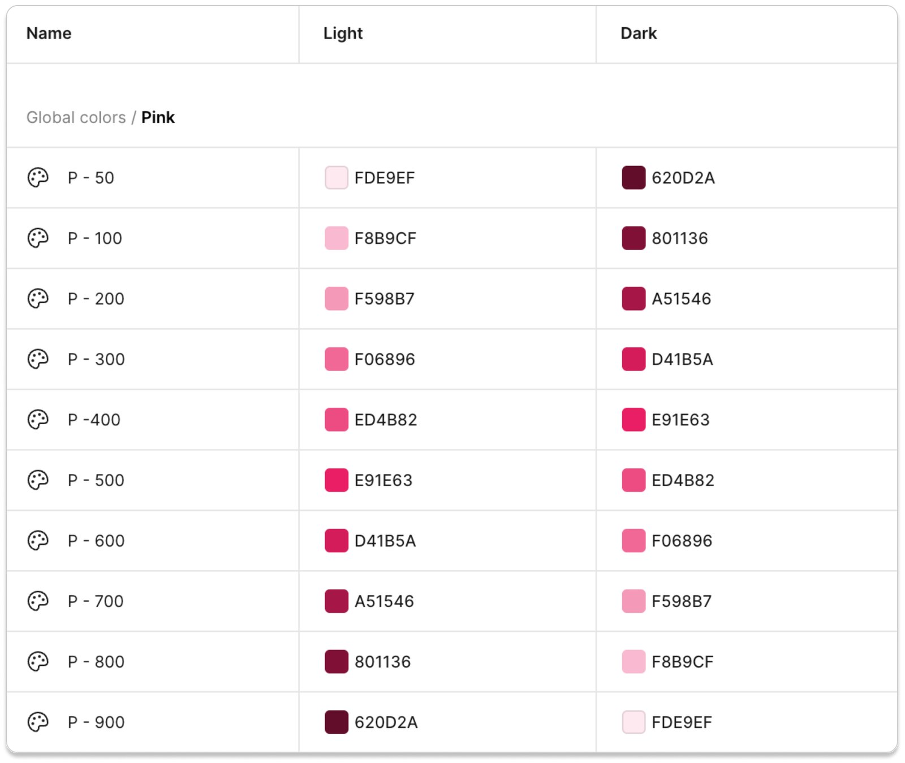
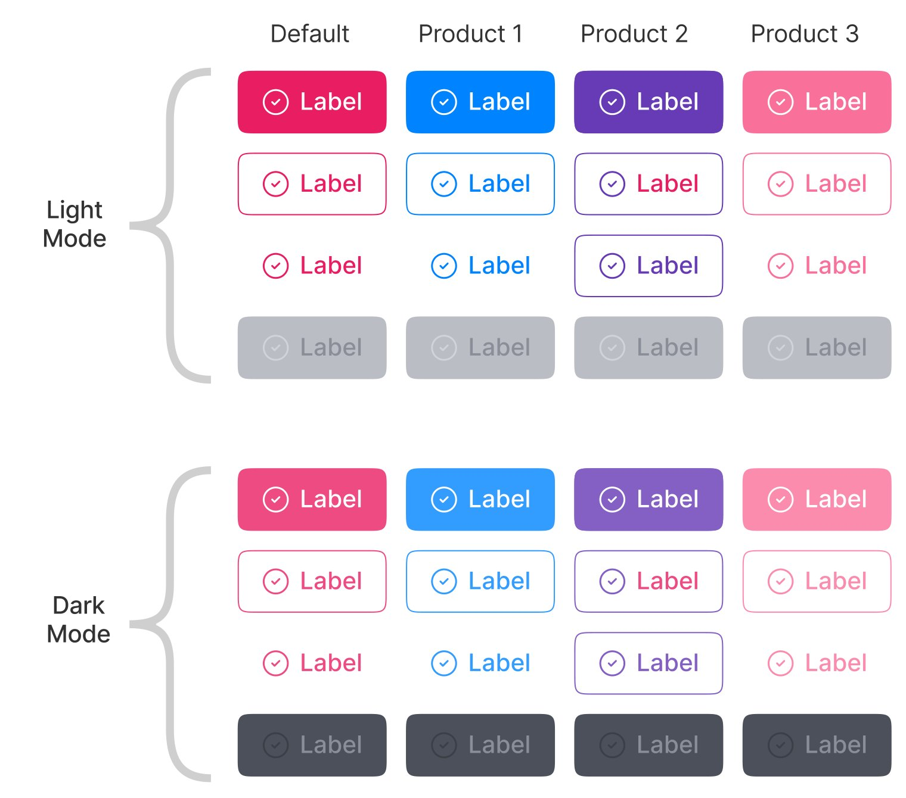
Decision: one button for every case
The most-used component is where a system either holds or splinters.
The button carries four types (primary, secondary, gradient and tertiary), nine states (default, hover, active, disabled, warning, danger, underline, success and information), a pill or square shape, five sizes from extra small to extra large, and four icon placements: none, left, right, or icon only. The label and the icon are properties, not variants.
Multiplied out, that is 1,440 combinations behind one component. A designer sees a handful of dropdowns.
Its dimensions are tokens as well. Vertical padding is space-3, horizontal padding is space-7, the corner is radius-md, and the height tokens run 32, 40 and 48 pixels for small, medium and large. When a spacing token changes, every button changes with it.
What it cost
A component this large is slow to change. Adding a state means checking it against every type, size, product and mode, which is exactly the kind of change the review process exists to catch.
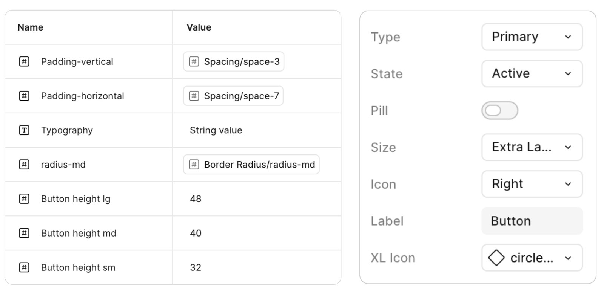
The foundations, as tokens
A value that gets typed will drift. So nothing is typed.
Every foundation is a named scale, and the scales are small on purpose. Spacing runs from 0 to 64 in twelve tokens. Five radii. Four elevation levels, each an offset, a blur, a spread and a neutral colour. Five breakpoints, with gutters and margins taken from the spacing scale rather than set per layout. Four icon sizes.
Typography has three families with three jobs: PP Neue Machina for display, Mulish for headings, Inter for body text and captions. The values below are the system’s own, drawn here at their real proportions.
Spacing
Radius
radius-sm8radius-md12radius-lg24radius-pill9999circle50%
Elevation
| Level | Y | Blur | Spread |
|---|---|---|---|
| 1 | 2 | 4 | 0 |
| 2 | 4 | 12 | 0 |
| 3 | 8 | 12 | 3 |
| 4 | 20 | 15 | −3 |
Type
- PP Neue Machina
- Display · 64/76, 48/56, 36/40
- Mulish
- Headings · H1 36/40
- Inter
- Body 18 to 20 · captions 14/20
Layout
- Breakpoints
- 320 · 767 · 1280 · 1440 · 1920
- Gutter, margins
- space-7, and space-9 on desktop
- Icons
- Lucide at 16 · 20 · 24 · 32
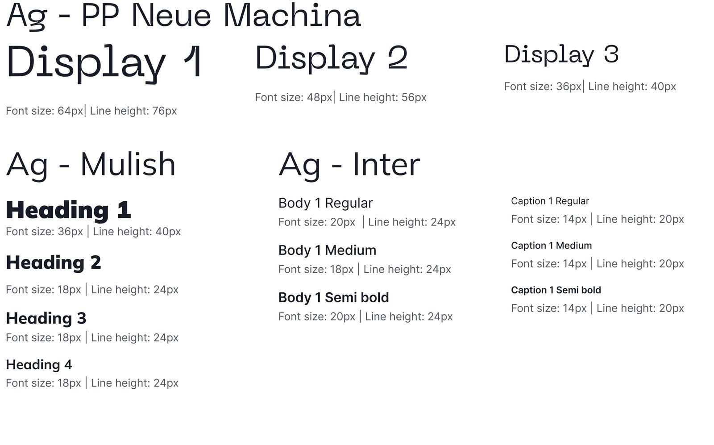
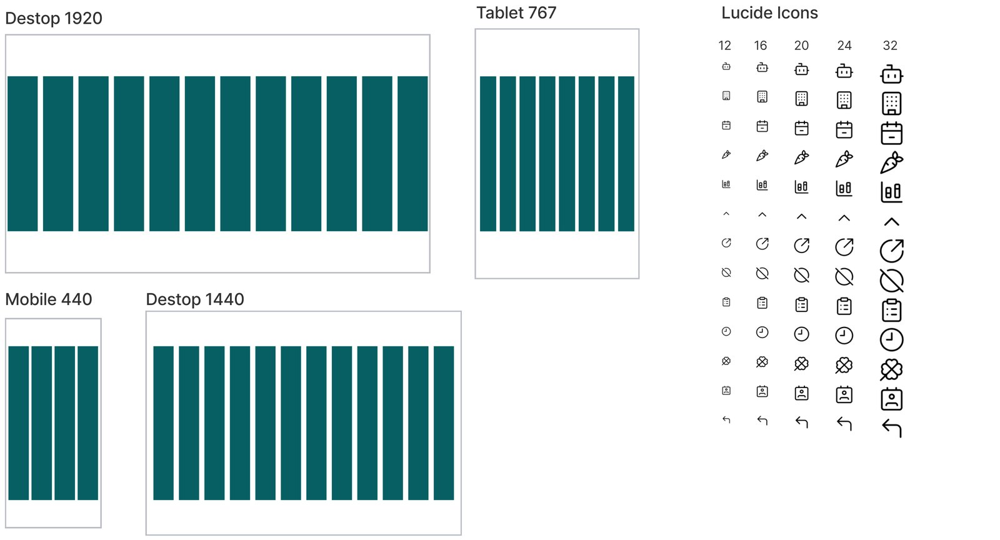
Glass, with rules
The glass look only works if every layer on a screen is the same glass.
Translucent surfaces are the most recognisable thing about Play+, and the easiest to get wrong. Two designers each picking an opacity produce two kinds of glass on one screen, and the depth stops reading as depth.
So surfaces are tokens too: a ladder of translucent fills for each mode, Surface Dark 1 to 10 and Surface White 1 to 10, stepping in tens of opacity from 10%. Depth and layering come from picking a rung, not from mixing a colour, and because the ladder is semantic, the frosted look moves between themes and products without being redrawn.
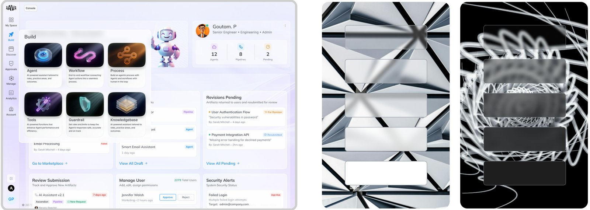
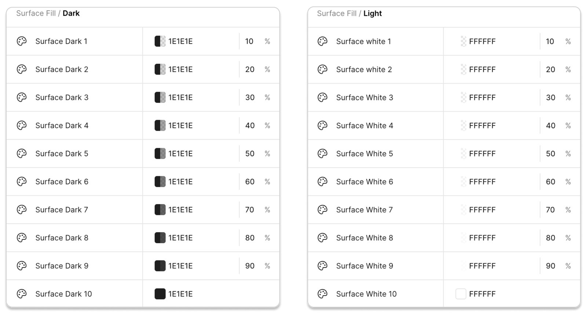
The library
Built from the same tokens, the components look like one family without trying.
Beyond the button: alerts in four feedback colours and three sizes, sliders, radio groups, toggles, badges, accordions, hyperlinks, spinners, text fields in every state, and tooltips. Each is themed by the same semantic tokens and documented with its usage, so a component that looks right in Console looks right in every studio without anyone touching it.
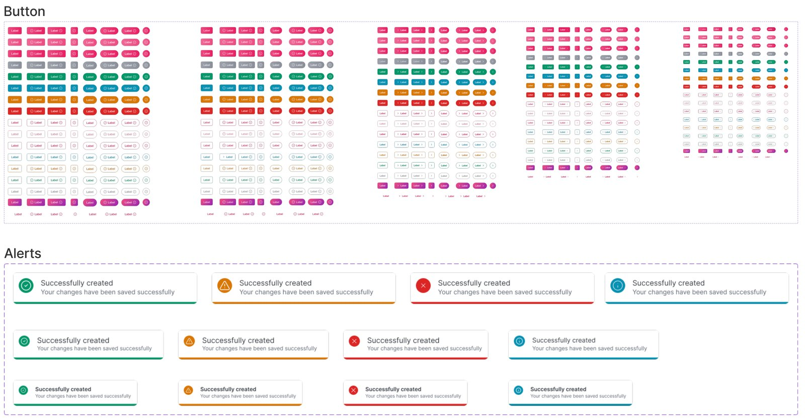
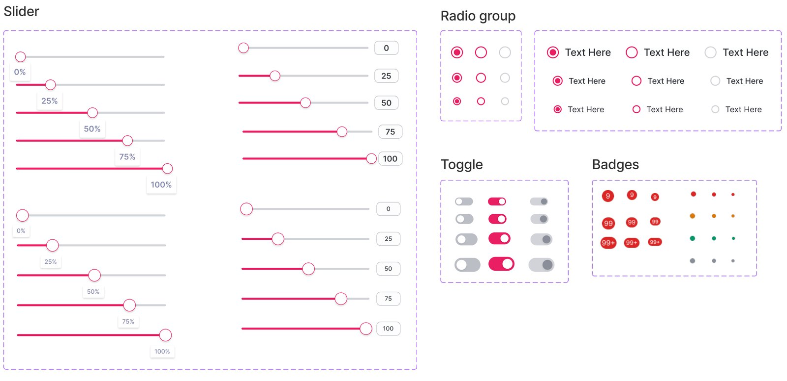
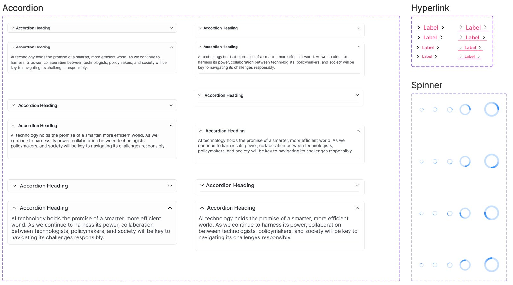
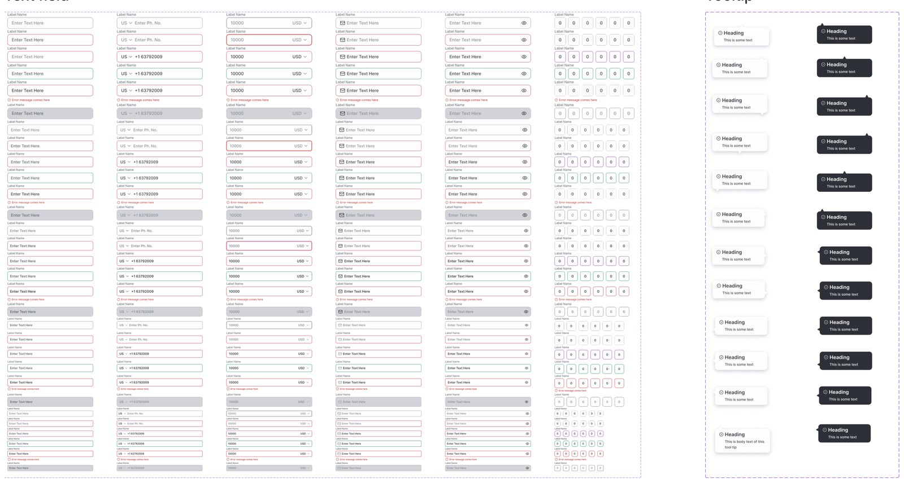
Governance
A shared library stays shared only if adding to it takes more than a whim.
New components come through one route. First the request is checked against the library: if something similar already exists, the need becomes a variant of it. If not, it is audited against the system’s tokens, theming and foundations before it can become a component.
Changes are made on a versioned duplicate, V.01 onward, never on the original. The lead UX designer approves, and only after that is the component documented and published to the library.
What it cost
Speed, deliberately. A team that needs a component this sprint could build it faster on its own. The route exists because that is exactly how the drift in the first section happened.
Where it stands
Version 2 is built and in use. I can show its structure, not a speed-up figure.
Play+ version 2 is developed and in use across four to six products, Console and the studios among them. The Product Studio case study shows the violet theme across a whole product.
What I can point to is structural: no product-specific component variants, one library serving light and dark, and a route that every new component goes through. I don’t have a measured before-and-after for design or development time, and I would rather say so than estimate one.
Questions about the system?
The part I’d most like to be pushed on is the semantic layer: where a role stops helping, and a product genuinely needs a component of its own.